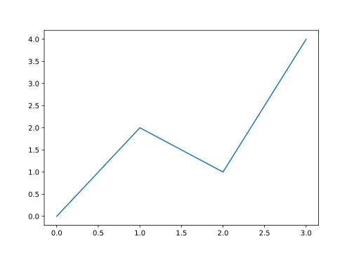
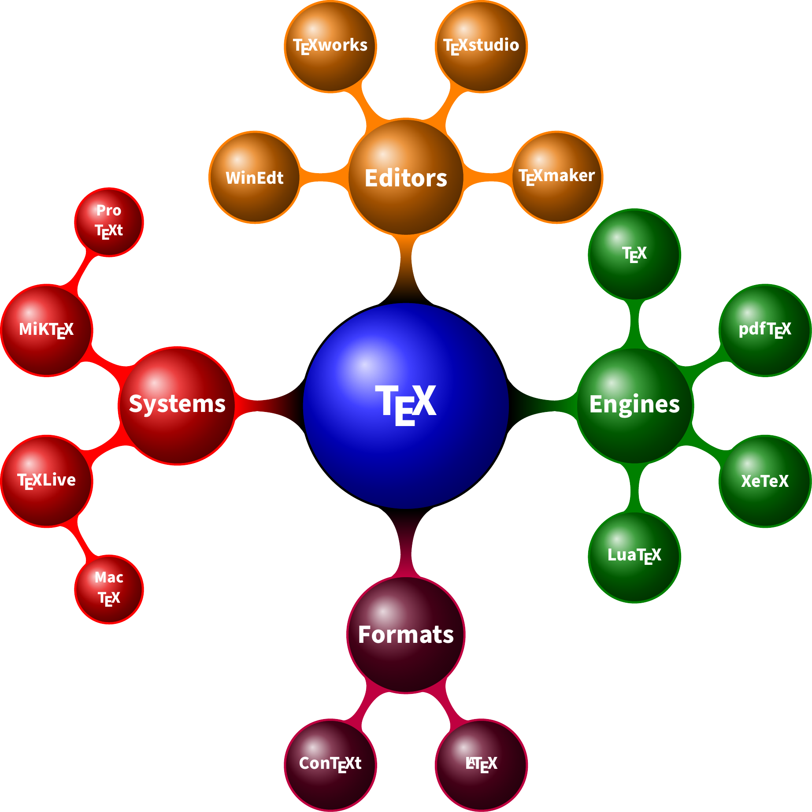

附录 C 混合编程
R 语言 [120] 是一个统计计算和绘图的环境，以下各个节不介绍具体 R 包函数用法和参数设置，重点在历史发展趋势脉络，详细介绍去见《现代统计图形》的相应章节。R 语言的目标在于统计计算和绘图，设计优势在数据结构、图形语法、动态文档和交互图形
C.1 函数源码
funflow 包可以将函数调用的过程以流程图的方式呈现，代码结构一目了然，快速理清源代码
remotes::install_github('moodymudskipper/funflow')
funflow::view_flow('median.default')
methods(predict)## [1] predict.ar* predict.Arima*
## [3] predict.arima0* predict.glm
## [5] predict.HoltWinters* predict.lm
## [7] predict.loess* predict.mlm*
## [9] predict.nls* predict.poly*
## [11] predict.ppr* predict.prcomp*
## [13] predict.princomp* predict.smooth.spline*
## [15] predict.smooth.spline.fit* predict.StructTS*
## see '?methods' for accessing help and source codestats 包里找不到这个函数
ls("package:stats", all.names = TRUE, pattern = "predict.poly")## character(0)
predict.poly## Error in eval(expr, envir, enclos): object 'predict.poly' not found可见函数 predict.poly() 默认没有导出
stats:::predict.poly## function (object, newdata, ...)
## {
## if (missing(newdata))
## object
## else if (is.null(attr(object, "coefs")))
## poly(newdata, degree = max(attr(object, "degree")), raw = TRUE,
## simple = TRUE)
## else poly(newdata, degree = max(attr(object, "degree")),
## coefs = attr(object, "coefs"), simple = TRUE)
## }
## <bytecode: 0x55a4f6212678>
## <environment: namespace:stats>或者
getAnywhere(predict.poly)## A single object matching 'predict.poly' was found
## It was found in the following places
## registered S3 method for predict from namespace stats
## namespace:stats
## with value
##
## function (object, newdata, ...)
## {
## if (missing(newdata))
## object
## else if (is.null(attr(object, "coefs")))
## poly(newdata, degree = max(attr(object, "degree")), raw = TRUE,
## simple = TRUE)
## else poly(newdata, degree = max(attr(object, "degree")),
## coefs = attr(object, "coefs"), simple = TRUE)
## }
## <bytecode: 0x55a4f6212678>
## <environment: namespace:stats>
getAnywhere("predict.poly")$where## [1] "registered S3 method for predict from namespace stats"
## [2] "namespace:stats"函数参数个数
## [1] "file" "header" "sep" "quote"
## [5] "dec" "numerals" "row.names" "col.names"
## [9] "as.is" "na.strings" "colClasses" "nrows"
## [13] "skip" "check.names" "fill" "strip.white"
## [17] "blank.lines.skip" "comment.char" "allowEscapes" "flush"
## [21] "stringsAsFactors" "fileEncoding" "encoding" "text"
## [25] "skipNul"C.2 命名约定
R 语言当前的命名状态 https://journal.r-project.org/archive/2012-2/RJournal_2012-2_Baaaath.pdf 和 https://essentials.togaware.com/StyleO.pdf
R 与不同的编程语言如何交互
C.4 R 与 Python
R 包 knitr 和 reticulate 支持 R Markdown 文档中嵌入 Python 代码块， reticulate 包还支持 Python 和 R 之间的数据对象通信交流。
如图 C.1 所示，在 R Markdown 中执行 Python 绘图代码，并且将图形插入文档。
import matplotlib.pyplot as plt
plt.switch_backend('agg')
plt.plot([0, 2, 1, 4])
## [<matplotlib.lines.Line2D object at 0x7fd4685d17c0>]
plt.show()

图 C.1: Python 图形
C.5 R 与 C
knitr 支持在 R Markdown 中嵌入 C 语言代码
void useC(int *i){
i[0] = 11;
}## make[1]: Entering directory '/home/runner/work/masr/masr'
## gcc -I"/opt/R/4.1.0/lib/R/include" -DNDEBUG -I/usr/local/include -fpic -g -O2 -c c665613eadf18.c -o c665613eadf18.o
## gcc -shared -L/opt/R/4.1.0/lib/R/lib -L/usr/local/lib -o c665613eadf18.so c665613eadf18.o -L/opt/R/4.1.0/lib/R/lib -lR
## make[1]: Leaving directory '/home/runner/work/masr/masr'
a <- rep(2,10)
out <- .C("useC", b = as.integer(a))
out## $b
## [1] 11 2 2 2 2 2 2 2 2 2
out$b## [1] 11 2 2 2 2 2 2 2 2 2一步一步地命令行操作
R CMD SHLIB useC1.c
dyn.load("useC1.dll")
a <- rep(2,10)
out <- .C("useC", b = as.integer(a))
out$bC.6 R 与 C++
Dirk Eddelbuettel 是 Rcpp 的核心开发者。
- Dirk Eddelbuettel celebRtion 2020, Copenhagen, Denmark Introduction to Rcpp: from simple examples to machine learning
- Online Tutorial for useR! 2020 Seamless R and C++ Introduction with Rcpp 视频 https://vimeo.com/438283959
- James Balamuta unofficial rcpp api documentation https://github.com/coatless/rcpp-api
- Rcpp for everyone https://github.com/teuder/rcpp4everyone_en
- 课程 Foundations of Data Science
C.7 R 与 LaTeX
tikzDevice 包将 LaTeX 公式和绘图系统 TikZ 引入 R 语言生态，贡献在于提供更加漂亮的公式输出，对图形进行后期布局排版加工，达到设计师出品的质量水平。图 C.2 展示了复杂的 TeX 生态系统， R 语言只是取其精华，使用 TikZ 绘制。
\begin{tikzpicture}
\path [
mindmap,
text = white,
level 1 concept/.append style =
{font=\Large\bfseries\sffamily, sibling angle=90, level distance=125},
level 2 concept/.append style =
{font=\normalsize\bfseries\sffamily},
level 3 concept/.append style =
{font=\small\bfseries\sffamily},
tex/.style = {concept, ball color=blue,
font=\Huge\bfseries},
engines/.style = {concept, ball color=green!50!black},
formats/.style = {concept, ball color=purple!50!black},
systems/.style = {concept, ball color=red!90!black},
editors/.style = {concept, ball color=orange!90!black}
]
node [tex] {\TeX} [clockwise from=0]
child[concept color=green!50!black, nodes={engines}] {
node {Engines} [clockwise from=90]
child { node {\TeX} }
child { node {pdf\TeX} }
child { node {XeTeX} }
child { node {Lua\TeX} }}
child [concept color=purple, nodes={formats}] {
node {Formats} [clockwise from=300]
child { node {\LaTeX} }
child { node {Con\TeX t} }}
child [concept color=red, nodes={systems}] {
node {Systems} [clockwise from=210]
child { node {\TeX Live} [clockwise from=300]
child { node {Mac \TeX} }}
child { node {MiK\TeX} [clockwise from=60]
child { node {Pro \TeX t} }}}
child [concept color=orange, nodes={editors}] {
node {Editors} [clockwise from=180]
child { node {WinEdt} }
child { node {\TeX works} }
child { node {\TeX studio} }
child { node {\TeX maker} }};
\end{tikzpicture}

图 C.2: TeX 系统
C.8 运行环境
## R version 4.1.0 (2021-05-18)
## Platform: x86_64-pc-linux-gnu (64-bit)
## Running under: Ubuntu 20.04.2 LTS
##
## Matrix products: default
## BLAS: /usr/lib/x86_64-linux-gnu/blas/libblas.so.3.9.0
## LAPACK: /usr/lib/x86_64-linux-gnu/lapack/liblapack.so.3.9.0
##
## locale:
## [1] LC_CTYPE=en_US.UTF-8 LC_NUMERIC=C
## [3] LC_TIME=en_US.UTF-8 LC_COLLATE=en_US.UTF-8
## [5] LC_MONETARY=en_US.UTF-8 LC_MESSAGES=en_US.UTF-8
## [7] LC_PAPER=en_US.UTF-8 LC_NAME=C
## [9] LC_ADDRESS=C LC_TELEPHONE=C
## [11] LC_MEASUREMENT=en_US.UTF-8 LC_IDENTIFICATION=C
##
## attached base packages:
## [1] stats graphics grDevices utils datasets methods base
##
## other attached packages:
## [1] Rcpp_1.0.7 reticulate_1.20 htmlwidgets_1.5.3 shiny_1.6.0
## [5] magrittr_2.0.1
##
## loaded via a namespace (and not attached):
## [1] highr_0.9 pillar_1.6.2 bslib_0.2.5.1 compiler_4.1.0
## [5] later_1.2.0 jquerylib_0.1.4 tools_4.1.0 digest_0.6.27
## [9] downlit_0.2.1 lattice_0.20-44 jsonlite_1.7.2 evaluate_0.14
## [13] lifecycle_1.0.0 tibble_3.1.3 png_0.1-7 pkgconfig_2.0.3
## [17] rlang_0.4.11 Matrix_1.3-4 curl_4.3.2 yaml_2.2.1
## [21] xfun_0.25 fastmap_1.1.0 stringr_1.4.0 xml2_1.3.2
## [25] knitr_1.33 fs_1.5.0 sass_0.4.0 vctrs_0.3.8
## [29] grid_4.1.0 R6_2.5.0 fansi_0.5.0 rmarkdown_2.10
## [33] bookdown_0.23 promises_1.2.0.1 ellipsis_0.3.2 htmltools_0.5.1.1
## [37] mime_0.11 xtable_1.8-4 httpuv_1.6.1 utf8_1.2.2
## [41] stringi_1.7.3 crayon_1.4.1参考文献
[120]
R. Ihaka and R. Gentleman, “R: A language for data analysis and graphics,” Journal of Computational and Graphical Statistics, vol. 5, no. 3, pp. 299–314, 1996.